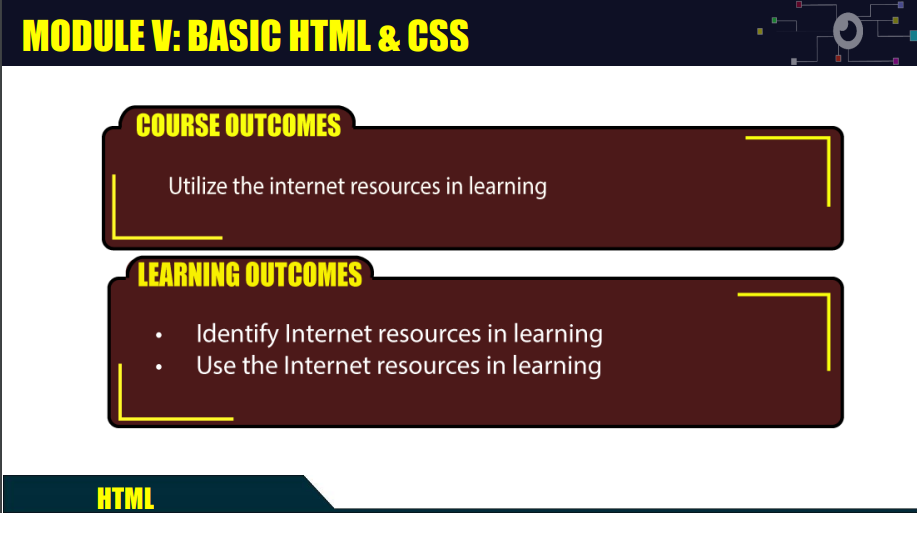

In my "Introduction to Computing" class, delving into the history of computers has posed a bit of a challenge for me. Memorizing all the details and becoming familiar with the evolution of computers can be overwhelming. However, surprisingly, I find joy in this challenge because understanding the history provides a deeper insight into how computers have developed over time. It's like uncovering the story behind the technology we use today.
On the flip side, the most captivating part of the course, for me, is web development. These lessons serve as a hands-on playground that helps me sharpen my skills. While working on creating and enhancing websites, I not only get to unleash my creativity but also face real-world challenges that require problem-solving. Despite the occasional difficulties, each project feels like a stepping stone to improvement. The practical applications in web development are where I discover the most satisfaction in my "Introduction to Computing" journey, as they not only make the learning process enjoyable but also contribute significantly to my skill set and understanding of the subject.
HTML AND CSS BASICS

Learning about HTML and CSS basics really helped me get a better grip on web development. The lesson covered the basics, acting like a solid refresher and reinforcing my understanding of key principles. From setting up content with HTML to making it look good with CSS, the course gave me a strong foundation for my journey in web development. This new knowledge allows me to create and design web pages effectively, improving my skills in this dynamic field.
INTERNET AND WORLDWIDE WEB
Diving into internet resources in the lesson was eye-opening. It showed me how to use them effectively and explained how the internet works. Understanding how information moves around online not only improved my practical skills but also made me see the digital world in a whole new light.
PROFESSIONS & CAREERS IN COMPUTING
The lesson on professions in computing was a real eye-opener. It shared insights into different computing roles and their pay structures. This info motivated me, giving me a clearer direction for my future in the computing field.
TECH TIMELINE RESEARCH
Checking out the tech timeline during the computing lesson was like going on a journey through computer history. It carefully went through the evolution of technology, giving me a solid overview of the important moments. This historical background has made me more aware of how computers have developed over time.